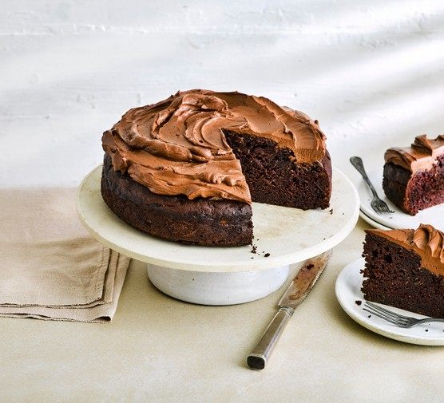

Home
Chocolate Courgette Cake
Ingredients
-
unsalted butter
-
sunflower oil
-
caster sugar
-
soft brown sugar
-
beaten eggs
-
semi-skimmed milk
-
plain flour
-
baking powder
-
cocoa powder
-
peeled, grated courgettes
-
vanilla extract

Directions
1.
Line a 20x35cm baking tray with baking parchment and set the oven to 190 C / Gas mark 5.
2.
Mix the butter, oil and both sugars together until light and fluffy.
3.
Gradually add the eggs, one at a time and then the milk until mixed thoroughly.
4.
Sift the dry ingredients together and fold into the mixture.
5.
Stir in grated and peeled courgettes, vanilla and spoon into tin.
6.
Bake for 35 to 45 minutes.
7.
Cut into squares whilst still warm.